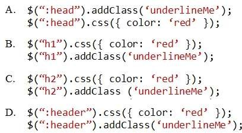

|
You are developing a web page that has a group of H1 and H2 elements. The page also includes a CSS
class named underlineMe.
You need to update the web page to meet the requirements. Which code segment should you use? 
Correct Answer: D Section: Volume A Explanation Explanation/Reference: Explanation: The :header selector selects all header elements (<h1> to <h6>). Reference: jQuery :header Selector http://www.w3schools.com/jquery/sel_header.asp ExplicaciónDefinición y uso: El selector de encabezado: selecciona todos los elementos de encabezado (<h1> a <h6>). Sintaxis: $(:header); Respuesta:Esto es un encabezado del tipo h1.Esto es un encabezado del tipo h2.Fuentes:https://www.w3schools.com/jquery/sel_header.asp |